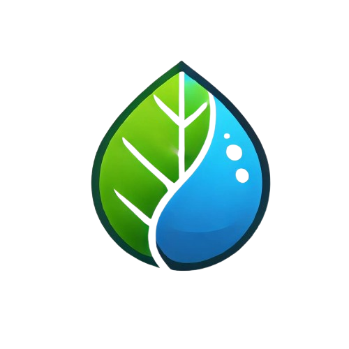

Nosotros
Somos un grupo de estudiantes que actualmente cursamos el sexto semestre del Bachillerato en Desarrollo de Software a nivel preparatoria. En este apartado se presenta información detallada sobre la contribución individual de cada integrante en la elaboración del proyecto, con el propósito de brindar una comprensión más completa del trabajo realizado y del proceso colaborativo que dio origen a esta iniciativa.
Responsable de Integración Técnica y Ensamblaje Estructural: Derek
Desempeñó un papel fundamental en la construcción y configuración del proyecto, encargándose del ensamblaje de la base estructural con paneles de acrílico moldeados para simular una vivienda, lo que facilitó tanto la funcionalidad como la visibilidad del invernadero. Además, desarrolló el código en Arduino asegurando su compatibilidad con los componentes electrónicos, realizó las conexiones necesarias para el correcto funcionamiento del sistema y llevó a cabo pruebas y ajustes para corregir errores, contribuyendo significativamente a la estabilidad y operatividad del proyecto.

En caso de tener dudas relacionadas con la estructura o el funcionamiento del sistema electrónico, puede comunicarse directamente con él a través del siguiente correo electrónico:
derek.carrillo6168@alumnos.udg.mx
Asistente de Desarrollo y Apoyo Técnico: Owen
El brindó apoyo constante durante todo el proceso del proyecto, colaborando en la realización de las conexiones eléctricas, participando en el diseño y planteamiento de la aplicación móvil, y contribuyendo con ideas innovadoras para la creación de la página web.

En caso de tener dudas respecto al planteamiento del proyecto, puede comunicarse directamente con el responsable a través del siguiente correo electrónico:
owen.sierra6170@alumnos.udg.mx
Desarrollador Web e Informativo: Martin
Su principal responsabilidad fue la elaboración de la página web del proyecto, utilizando el lenguaje HTML y el lenguaje de programacion CSS para agregar un apartado informativo que permita comunicar de manera clara y detallada los aspectos relevantes del proyecto. Además, brindó apoyo en la construcción de las bases del invernadero, contribuyendo al desarrollo general del mismo.

En caso de tener dudas generales sobre el proyecto o consultas específicas relacionadas con la creación y estructura del sitio web, puede comunicarse con él a través del siguiente correo electrónico:
martin.solano6140@alumnos.udg.mx
Desarrollador de Aplicación Móvil: William
William fue responsable del desarrollo del software involucrado en la creación de una aplicación funcional que permite controlar el invernadero de manera remota, sin la necesidad de utilizar una computadora. Su trabajo facilitó el uso y manejo del sistema a través de dispositivos móviles, simplificando la operación del invernadero.

Si tienes alguna duda relacionada con el funcionamiento o desarrollo de la app, puedes contactarlo directamente a través del siguiente correo electrónico:
william.lupercio6133@alumnos.udg.mx